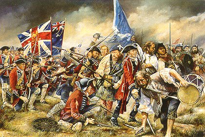

Lochiel's Farewell 1746
Les Adieux de Lochiel
By John Grieve (1781 - 1836)

Tune
"Mo chailin dileas donn" or "Fingal's Lament"
from Hogg's "Jacobite Relics" 2nd Series , Appendix, Part I N°15 page 417
Sequenced by Christian Souchon
|
About the tune
This martial march is in fact a Gaelic love song which you may hear, sung by Jennifer Guest, on clicking on the link below. MO CHAILIN DÌLEAS DONN Gu ma slàn a chì mi Mo chailin dìleas donn; Bean a chuailein réidh air An deas a dh'éireadh fonn, 'Si cainnt do bheòil bu bhinne leam, An uair bhiodh m'inntinn trom, 'S tu thogadh suas mo chridh'-sa 'Nuair bhiodh tu bruidheann riùm. Gur muladach a tà mi, 'S mi nochd air aird a' chuain, 'S neo-shunndach mo chadal dhomh, 'S do chaidreamh fada bhuam; Gur tric mi ort a smaointeach', As t'aogais tha mi truagh, 'Is mar a dean mi d' fhaotainn Cha bhi mo shaoghal buan. Tacan mu'n do sheòl sinn, Is ann a thòisich càch, Ri innse do mo chruinneag-sa Nach tillin-sa gu brath; Na cuireadh sud ort gruaimean, A luaidh, ma bhios mi slàn, Cha chùm dad idir 'uat mi Ach saighead chruaidh a'bhàis. "The [lyrics of the song "Culloden Day"] are by John Grieve (1781-1836) who became a successful businessman in Edinburgh. Through connections with the Scottish Borders, he became acquainted with the poet and song-writer James Hogg and provided practical and financial support for the "Ettrick Shepherd." Grieve wrote in a vigorous style, as in in this work, which portrays the chief of the Clan Cameron at the time of Culloden.[...] During the Jacobite retreat, Lochiel prevented the Highlanders from sacking Glasgow and to this day when Cameron of Lochiel enters the city, the bells of the churches are rung in his honour. The Gentle Lochiel survived Culloden and was exiled to France. The song is sung to an air known as "Fingal's Lament." (A tune titled "Fingal's Lamentation" is quoted after Gow's "Fourth Collection of Niel Gow's Reels (1800) by Andrew Kuntz in his "Fiddler's Companion" but is quite different from the present tune). Source: www.rampantscotland.com |
A propos de la mélodie
Ce chant martial est en réalité un chant d'amour gaélique que l'on peut entendre chanté par Jennifer Guest en cliquant sur le lien ci-après. MY FAITHFUL BROWN-HAIRED LASS
Healthy do I see you,
"Les paroles du chant "Culloden Day" sont de John Grieve (1781-1836) , un riche homme d'affaires d'Édimbourg. Grâce à des relations communes du Scottish Border, il fit la connaissance de James Hogg auquel il apporta une aide pratique et financière. Il avait un style vigoureux qui apparaît dans le présent chant où il fait le portrait du chef du Clan Cameron à l'époque de Culloden [...] Pendant la retraite, Lochiel empêcha les Highlanders de piller Glasgow et, aujourd'hui encore, lorsque le chef Cameron de Lochiel entre dans cette ville, on fait sonner les cloches des églises en son honneur. Lochiel le Gentilhomme survécut à Culloden et s'exila en France. Le chant se chante sur l'air de "Fingal's Lament". La mélodie, intitulée "Lamentation de Fingal", citée d'après la "Quatrième Collection de reels de Niel Gow" (1800) par Andrew Kuntz dans son"Fiddler's Companion" ne présente pas de similitude avec le présent morceau. Source: www.rampantscotland.com |
Tune sung by Jennifer Guest
Sheet Music

|
CULLODEN DAY
1. Culloden, on the swarthy brow Spring no wild flow'rs nor verdure fair: Thou feel'st not summer's genial glow, More than the freezing wintry air; For once thou drank'st the hero's blood, And war's unhallow'd footsteps bore. The deeds unholy nature view'd, Then fled, and curs'd thee evermore. 2. From Beauly's wild and woodland glens, How proudly Lovat's banners soar! How fierce the plaided Highland clans Rush onward with the broad claymore! Those hearts that high with honour heaved, The volleying thunder there laid low! Or scattered like the forest leaves, When wintry winds begin to blow! 3. Where now thy honours, brave Lochiel! The braided plume's torn from thy brow. What must thy haughty spirit feel, When skulking like the mountain roe! While wild-birds chant from Lochy's bowers, On April eve, their loves and joys; The Lord of Lochy's loftiest towers, To foreign lands an exile flies. 4. To his blue hills that rose in view, As o'er the deep his galley bore, He often looked, and cried, "Adieu! "I'll never see Lochaber more! "Though now thy wounds I cannot heal, "My dear, my injured native land! "In other climes thy foe shall feel "The weight of Cameron's deadly brand. 5. "Land of proud hearts and mountains gray! "Where Fingal fought and Ossian sung! "Mourn dark Culloden's fateful day, "That from thy chiefs the laurel wrung. "Where once they ruled and roamed at will, "Free as their own dark mountain game; "Their sons are slaves, yet keenly feel "A longing for their father's fame. 6. "Shades of the mighty and the brave, "Who, faithful to your Stuart, fell; "No trophies mark your common grave, "Nor dirges to your mem'ry swell! "But generous hearts will weep your fate, "When far has rolled the tide of time; "And bards unborn shall renovate "Your fading fame in loftiest rhyme!" Lyrics by John Grieve (1781 - 1836) |
LA JOURNEE DE CULLODEN
1. Culloden, sur ta brune plaine Ne poussent verdure ni fleurs: Tu ne connais la chaude haleine, De l'été, non plus que l'hiver; Toi qu'abreuva le sang des braves, Et que la guerre a piétiné, La nature après ces outrages, Te fuit et maudit à jamais. 2. De Beauly et des vaux boisés Surgit de Lovat la bannière! Féroces, drapés dans leurs plaids Les clans agitaient leurs rapières! L'honneur faisait battre ces cœurs Qu'un déluge de feu fit taire Ou dispersa comme les feuilles, Que les vents glacés emportèrent! 3. Où sont tes fastes, fier Lochiel, Le plumet dont s'ornait ton front? Que ressent ta valeur altière A fuir, comme le cerf des monts! Les oiseaux chantent à Lochy, En avril, leurs joies, leurs amours; Le maître des lieux en exil A l'étranger a fui ses tours. 4. Vers ses hauteurs bordant de bleu Le sillage de sa galère, Il se tournait disant "Adieu! "Je ne verrai plus Lochaber! "Je ne peux conjurer les maux "Endurés par mon cher pays! "Mais Cameron, sous d'autres cieux, "Saura châtier ses ennemis! 5. "Pays des cœurs fiers, des monts gris! "Pays de Fingal et d'Ossian! "Les lauriers de tes Chefs, flétris, "Jonchent le sol de Culloden. "Jadis ils allaient et régnaient, "Libres comme l'aigle altière; "Leurs fils, captifs, voudront renouer "Avec la gloire de leurs pères. 6. "Ombres des puissants, des héros, "Qui donnâtes vos vies pour Stuart; "Nul trophée n'orne vos tombeaux, "Nul chant funèbre vos mémoires! "Mais les cœurs nobles pleureront "Quand viendra le reflux du temps; "Et des bardes relèveront "Votre honneur pâli, par leurs chants!" Traduction: Christian Souchon (c) 2004
|
|
Having gained over so powerful a chief, the Pretender announced he woul raise the royal standard on the 10th of August at Glenfinnan where he invited all his adherents to attend. Lochiel went home to muster his own clan. Charles embarked from Moidart with his attendants in three boats and went to the rendez-vous: nobody was awaiting him in the narrow glen but the scarce local inhabitants. He retired however to one of the nearby hovels. After two anxious hours of suspense he heard sounds of bagpipe in the distance: It was the Clan Cameron proceeding to the gathering place with Lochiel at their head, 700 to 800 strong, well armed, well equiped, disciplined who was to form the elite of the rebel army. Charlie proclaimed at once war against the "Elector of Hanover", raised his banner and proclaimed his father sovereign of the British empire. New volunteers arrived after the ceremony encreasing the little army to 12000 men.
Clan Cameron distinguished themselves by their courage and apt action on several occasions. A party of them took Perth. Another took Edinburgh without shedding a drop of blood. In the Lowlands Lochiel executed a marauder of his Clan who had stolen sheep. The poet Dugald Graham , who was Glasgow bellman in 1745, describes this summary act of justice, in his rhymed 'History', as follows: "This did enrage the Camerons' chief To see his men so play the thief; And finding one into the act, He fired and shot him through the back..." thus, greatly contributing to procure for Charlie's army a character for forbearance by which made them stand out.. The victory of Prestonpans is chiefly attributed to the Clan Cameron, by whom the royal dragoons were routed and the foot left without uncovered. Lochiel had ordered his men to strike at the noses of the horses with their swords without caring about the riders.
Lochiel was one of the principal leaders in the unsuccessful surprise attack against the English army the night before Culloden. In the battle that followed next day the Camerons , though in a state of utter exhaustion, fought with fierce and terrific energy. The whole front rank fell. Lochiel himself received several wounds in the legs and was carried off the field. After this defeat he hid at first for two months in his own district, then settled in a miserable hovel at the foot of the mountain Benalder to be cured of his wounds.
|
Ayant rallié un chef aussi puissant, le jeune Prétendant annonça qu'il lèverait l'étendard royal le 10 août à Glenfinnan, où il attendait tous ses partisans. Lochiel rentra pour mobiliser son propre clan. Charles s'embarqua à Moidart avec son escorte dans trois bateaux pour aller au rendez-vous: personne ne l'attendait dans l'étroite vallée, mis à part les quelques paysans des environs.I se retira néanmoins dans une des prôches masures. Après deux longues heures d'attente inquiète, il entendit au loin un son de cornemuse: c'était le Clan Cameron qui s'avançait vers le lieu de rassemblement avec Lochiel à sa tête, un régiment de 700 à 800 hommes bien armés, bien équipés et disciplinés qui allaient constituer l'élite de l'armée rebelle. Charlie déclara aussitôt la guerre à "l'Electeur de Hanovre", leva sa bannière et proclama son père, souverain de l'Empire britannique. De nouveaux volontaires arrivèrent après la cérémonie et vinrent grossir les rangs de la petite armée qui compta bientôt 12000 hommes.
Le Clan Cameron se distingua par son courage et son esprit de décision en maintes occasions. Un groupe de ce clan prit Perth. Un autre prit Édimbourg sans verser une goutte de sang. Dans les Lowlands, Lochiel exécuta un maraudeur de son Clan qui volait des moutons. Le poète
Dugald Graham
, qui était crieur public à Glasgow en 1745, décrit ainsi, dans son 'Histoire' en vers, cet acte de justice sommaire:
Lochiel fut l'un des principaux officiers lors de l'attaque surprise de l'armée anglaise la nuit précédant Culloden. Au cours de la bataille du lendemain le Clan Cameron, bien qu'épuisé, se battit avec une énergie farouche et terrible. Toute la rangée de tête du régiment fut fauchée. Lochiel lui-même reçut plusieurs blessures aux jambes et on l'emporta hors du champ de bataille. Après la défaite, il se cacha d'abord sur ses propres terres pour s'établir ensuite dans une misérable masure au pied du mont Benalder et y soigner ses blessures.
|